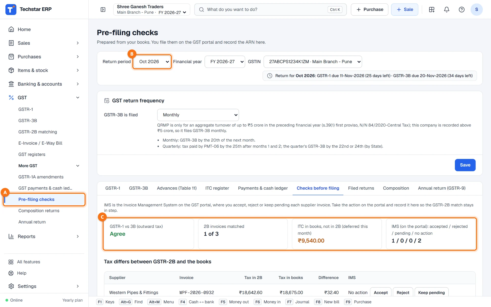
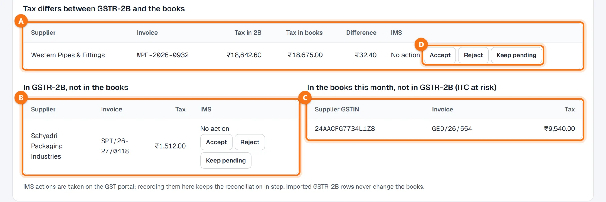
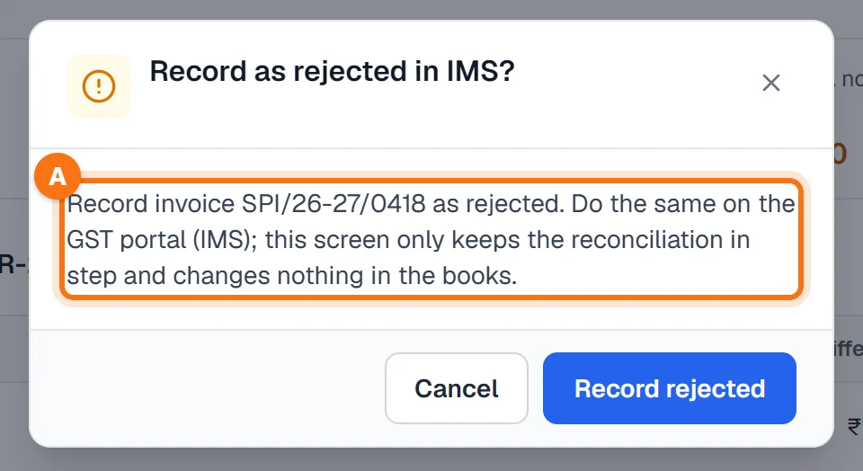

Techstar ERP मराठी आणि हिंदीतही वापरता येतो. वर उजवीकडे तुमच्या नावाच्या आद्याक्षराच्या गोल बटणावर click करा → Language (भाषा) → मराठी. ERP चा menu मराठीत दिसतो (उदा. Sales = विक्री). बिले आणि इतर कायदेशीर कागदपत्रे नेहमीप्रमाणेच छापली जातात. या guide मधले screenshots English menu चे आहेत.
सुरू करण्यापूर्वी
महिन्याचे GSTR-2B import करा — GST पोर्टलवरून डाउनलोड केलेल्या फाइलमधून (पहा खरेदी GSTR-2B शी जुळवा). त्याशिवाय तपासणीचा GSTR-2B भाग रिकामा राहतो.
इथे काहीही भरले किंवा बदलले जात नाही. तपासण्या तुमचा हिशोब आणि import केलेले GSTR-2B फक्त वाचतात. IMS कृती नोंदवल्याने फक्त जुळवणी अद्ययावत राहते; हिशोबात काहीही बदलत नाही.
तपासणी उघडा
डाव्या menu मध्ये GST → More GST → Pre-filing checks A उघडा (मराठी menu मध्ये: GST → आणखी GST → रिटर्नआधी तपासणी). हा GST returns स्क्रीनचा Checks before filing टॅब आहे. Return period B (उदाहरणात ऑक्टोबर 2026) आणि GSTIN निवडा.

चार टाइल्स वाचा
टाइल्स C महिन्याची स्थिती एका नजरेत दाखवतात:
| टाइल | काय सांगते |
|---|---|
| GSTR-1 vs 3B (outward tax) | GSTR-1 मधील टॅक्स GSTR-3B मधील विक्रीवरील टॅक्सइतकाच असेल तर Agree; नाहीतर फरक लाल रंगात. |
| 2B invoices matched | Import केलेल्या GSTR-2B मधील किती इनव्हॉइस तुमच्या हिशोबाशी जुळतात. |
| ITC in books, not in 2B (deferred this month) | पुरवठादाराने अजून न कळवलेल्या बिलांचे ITC. GSTR-2B मध्ये बिल दिसेपर्यंत GSTR-3B ते घेत नाही. |
| IMS (on the portal): accepted / rejected / pending / no action | महिन्याच्या GSTR-2B इनव्हॉइसवर तुम्ही नोंदवलेल्या IMS कृती. |
GSTR-1 आधीच filed म्हणून नोंदवले असेल आणि त्यानंतर हिशोबात इनव्हॉइस बदलली असतील, तर पिवळ्या बॉक्समध्ये नंतर जोडलेली (पुढच्या GSTR-1 मध्ये कळवा) आणि काढलेली किंवा बदललेली (GSTR-1A किंवा क्रेडिट नोटने दुरुस्त करा) इनव्हॉइस दिसतात.
याद्या तपासा
- Tax differs between GSTR-2B and the books A — इनव्हॉइस दोन्हीकडे आहे, पण टॅक्स सारखा नाही. उदाहरणात पुरवठादाराने ₹18,642.60 कळवले आणि तुमच्या बिलावर ₹18,675.00 आहे.
- In GSTR-2B, not in the books B — पुरवठादाराने कळवलेले, पण तुम्ही न टाकलेले इनव्हॉइस.
- In the books this month, not in GSTR-2B (ITC at risk) C — तुमचे बिल, जे पुरवठादाराने अजून कळवले नाही.

तुमच्या स्वतःच्या चुका बिलातच (Purchases) दुरुस्त करा आणि तपासणी पुन्हा उघडा — ती प्रत्येक वेळी नव्याने मोजली जाते. चूक पुरवठादाराची असेल तर त्याला त्याचे रिटर्न दुरुस्त करायला सांगा.
IMS कृती नोंदवा
IMS म्हणजे GST पोर्टलवरील Invoice Management System, जिथे तुम्ही प्रत्येक पुरवठादार इनव्हॉइस accept, reject किंवा pending ठेवता. कृती पोर्टलवर करा, मग तीच इथे इनव्हॉइसच्या ओळीवरील Accept, Reject किंवा Keep pending D ने नोंदवा.
Reject नोंदवताना आधी विचारले जाते A: GST पोर्टलवरही (IMS) तेच करा; ही स्क्रीन फक्त जुळवणी अद्ययावत ठेवते आणि हिशोबात काहीही बदलत नाही.

Rejected म्हणून नोंदवलेले इनव्हॉइस बिले जुळवताना आणि GSTR-3B मध्ये उपलब्ध ITC म्हणून मोजले जात नाही. असे बिल तरीही तुमच्या हिशोबात घेतले असेल तर स्क्रीन ते लाल रंगात दाखवते — ITC reverse करा किंवा क्रेडिट नोट घ्या.
प्रत्येक रिटर्नमधील तपासण्या
प्रत्येक रिटर्नमध्येही स्वतःच्या तपासण्या आहेत:
- GSTR-1 — Checks टाइल, Checks of the return टेबल (विभाग आणि दस्तऐवजानुसार errors आणि warnings) आणि गहाळ इनव्हॉइस नंबरसह table 13. पहा GSTR-1 तयार करा.
- GSTR-1 आणि GSTR-3B — Books vs return Output आणि Input GST ledgers ची रिटर्नशी तुलना करते आणि ज्या बिलाच्या नोंदीत GST वेगळा आहे ते दाखवते. पहा GSTR-3B तयार करा.
नेहमीचे प्रश्न
इथे IMS कृती नोंदवल्याने GST पोर्टलवर इनव्हॉइस accept किंवा reject होते का?
GSTR-1 vs 3B मध्ये फरक दिसतो. काय तपासायचे?
GSTR-2B भाग रिकामा आहे.
तपासण्यांमुळे माझा हिशोब बदलतो का?
आणखी guides
Screenshots Techstar ERP मधील demo कंपनीचे आहेत (Shree Ganesh Traders, Pune). सर्व नावे, GSTIN, रकमा आणि कागदपत्रांचे नंबर नमुना माहिती आहेत.